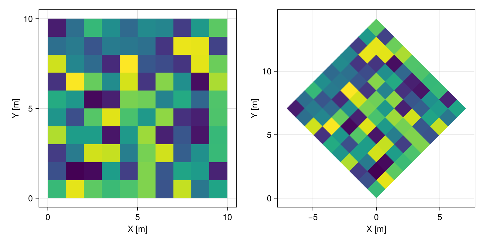
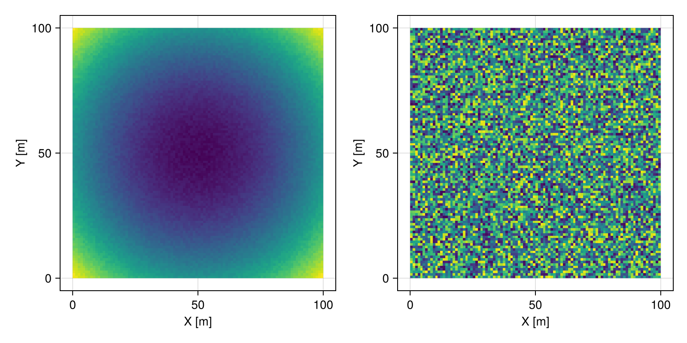
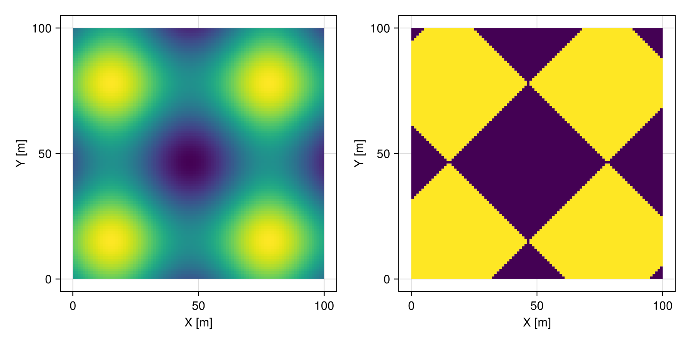
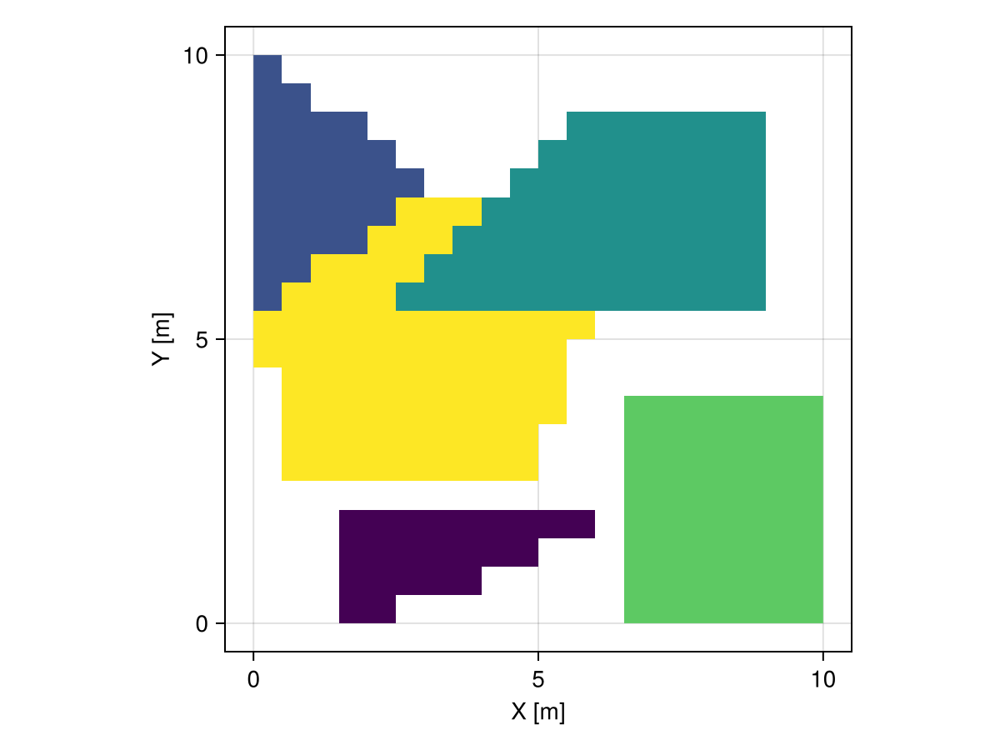

Geospatial transforms
We provide a very powerful list of transforms that were designed to work seamlessly with geospatial data. These transforms are implemented in different packages depending on how they interact with geometries.
The list of supported transforms is continuously growing. The following code can be used to print an updated list in any project environment:
# packages to print type tree
using InteractiveUtils
using AbstractTrees
using TransformsBase
# packages with transforms
using GeoStats
# define the tree of types
AbstractTrees.children(T::Type) = subtypes(T)
# print all currently available transforms
AbstractTrees.print_tree(TransformsBase.Transform)Transform
├─ GeometricTransform
│ ├─ Bridge
│ ├─ CoordinateTransform
│ │ ├─ Affine
│ │ ├─ LengthUnit
│ │ ├─ Morphological
│ │ ├─ Proj
│ │ ├─ ReinterpretCoords
│ │ ├─ Rotate
│ │ ├─ Scale
│ │ ├─ Stretch
│ │ └─ Translate
│ ├─ LambdaMuSmoothing
│ ├─ Repair
│ ├─ Shadow
│ ├─ Slice
│ ├─ StdCoords
│ └─ ValidCoords
├─ Identity
├─ TableTransform
│ ├─ Aggregate
│ ├─ Detrend
│ ├─ Downscale
│ ├─ DropLocalLowHigh
│ ├─ FeatureTransform
│ │ ├─ EigenAnalysis
│ │ ├─ Remainder
│ │ ├─ ColwiseFeatureTransform
│ │ │ ├─ Center
│ │ │ ├─ Coalesce
│ │ │ ├─ LowHigh
│ │ │ ├─ Quantile
│ │ │ └─ ZScore
│ │ └─ StatelessFeatureTransform
│ │ ├─ AbsoluteUnits
│ │ ├─ Assert
│ │ ├─ Closure
│ │ ├─ Coerce
│ │ ├─ ColTable
│ │ ├─ Compose
│ │ ├─ DropConstant
│ │ ├─ DropExtrema
│ │ ├─ DropMissing
│ │ ├─ DropNaN
│ │ ├─ DropUnits
│ │ ├─ Filter
│ │ ├─ Functional
│ │ ├─ Indicator
│ │ ├─ KMedoids
│ │ ├─ Learn
│ │ ├─ Levels
│ │ ├─ Map
│ │ ├─ OneHot
│ │ ├─ ProjectionPursuit
│ │ ├─ Reject
│ │ ├─ Rename
│ │ ├─ Replace
│ │ ├─ RowTable
│ │ ├─ Sample
│ │ ├─ Satisfies
│ │ ├─ Select
│ │ ├─ Sort
│ │ ├─ SpectralIndex
│ │ ├─ StdFeats
│ │ ├─ StdNames
│ │ ├─ LogRatio
│ │ │ ├─ ALR
│ │ │ ├─ CLR
│ │ │ └─ ILR
│ │ ├─ Unit
│ │ └─ Unitify
│ ├─ GHC
│ ├─ GSC
│ ├─ Gradient
│ ├─ Interpolate
│ ├─ InterpolateNeighbors
│ ├─ MaxPosterior
│ ├─ ModeFilter
│ ├─ Potrace
│ ├─ Quenching
│ ├─ Rasterize
│ ├─ SLIC
│ ├─ ParallelTableTransform
│ ├─ Transfer
│ ├─ UniqueCoords
│ └─ Upscale
└─ SequentialTransformTransforms at the leaves of the tree above should have a docstring with more information on the available options. For example, the documentation of the Select transform is shown below:
TableTransforms.Select — Type
Select(col₁, col₂, ..., colₙ)
Select([col₁, col₂, ..., colₙ])
Select((col₁, col₂, ..., colₙ))The transform that selects columns col₁, col₂, ..., colₙ.
Select(col₁ => newcol₁, col₂ => newcol₂, ..., colₙ => newcolₙ)Selects the columns col₁, col₂, ..., colₙ and rename them to newcol₁, newcol₂, ..., newcolₙ.
Select(regex)Selects the columns that match with regex.
Examples
Select(1, 3, 5)
Select([:a, :c, :e])
Select(("a", "c", "e"))
Select(1 => :x, 3 => :y)
Select(:a => :x, :b => :y)
Select("a" => "x", "b" => "y")
Select(r"[ace]")Transforms of type FeatureTransform operate on the attribute table, whereas transforms of type GeometricTransform operate on the underlying geospatial domain:
TableTransforms.FeatureTransform — Type
FeatureTransformA transform that operates on the columns of the table containing features, i.e., simple attributes such as numbers, strings, etc.
Meshes.GeometricTransform — Type
GeometricTransformA method to transform the geometry (e.g. coordinates) of objects. See [https://en.wikipedia.org/wiki/Geometrictransformation] (https://en.wikipedia.org/wiki/Geometrictransformation).
Other transforms such as Detrend are defined in terms of both the geospatial domain and the attribute table. All transforms and pipelines implement the following functions:
TransformsBase.isrevertible — Function
isrevertible(transform)Tells whether or not the transform is revertible, i.e. supports a revert function. Defaults to false for new transform types.
Transforms can be revertible and yet don't be invertible. Invertibility is a mathematical concept, whereas revertibility is a computational concept.
See also isinvertible.
TransformsBase.isinvertible — Function
isinvertible(transform)Tells whether or not the transform is invertible, i.e. whether it implements the inverse function. Defaults to false for new transform types.
Transforms can be invertible in the mathematical sense, i.e., there exists a one-to-one mapping between input and output spaces.
See also inverse, isrevertible.
TransformsBase.inverse — Function
TransformsBase.apply — Function
newobject, cache = apply(transform, object)Apply transform on the object. Return the newobject and a cache to revert the transform later.
TransformsBase.revert — Function
object = revert(transform, newobject, cache)Revert the transform on the newobject using the cache from the corresponding apply call and return the original object. Only defined when the transform isrevertible.
TransformsBase.reapply — Function
newobject = reapply(transform, object, cache)Reapply the transform to (a possibly different) object using a cache that was created with a previous apply call. Fallback to apply without using the cache.
Feature transforms
Please check the TableTransforms.jl documentation for an updated list of feature transforms. As an example consider the following features over a Cartesian grid and their statistics:
using DataFrames
# table of features and domain
tab = DataFrame(a=rand(1000), b=randn(1000), c=rand(1000))
dom = CartesianGrid(100, 100)
# georeference table onto domain
Ω = georef(tab, dom)
# describe features
describe(values(Ω))| Row | variable | mean | min | median | max | nmissing | eltype |
|---|---|---|---|---|---|---|---|
| Symbol | Float64 | Float64 | Float64 | Float64 | Int64 | DataType | |
| 1 | a | 0.507658 | 0.00320196 | 0.504538 | 0.999657 | 0 | Float64 |
| 2 | b | 0.0420525 | -3.00079 | 0.0193217 | 3.0179 | 0 | Float64 |
| 3 | c | 0.498916 | 0.000310315 | 0.498313 | 0.999579 | 0 | Float64 |
We can create a pipeline that transforms the features to their normal quantile (or scores):
pipe = Quantile()
Ω̄, cache = apply(pipe, Ω)
describe(values(Ω̄))| Row | variable | mean | min | median | max | nmissing | eltype |
|---|---|---|---|---|---|---|---|
| Symbol | Float64 | Float64 | Float64 | Float64 | Int64 | DataType | |
| 1 | a | 0.00309023 | -3.09023 | 0.00125332 | 3.09023 | 0 | Float64 |
| 2 | b | 0.00309023 | -3.09023 | 0.00125332 | 3.09023 | 0 | Float64 |
| 3 | c | 0.00309023 | -3.09023 | 0.00125332 | 3.09023 | 0 | Float64 |
We can then revert the transform given any new geospatial data in the transformed sample space:
Ωₒ = revert(pipe, Ω̄, cache)
describe(values(Ωₒ))| Row | variable | mean | min | median | max | nmissing | eltype |
|---|---|---|---|---|---|---|---|
| Symbol | Float64 | Float64 | Float64 | Float64 | Int64 | DataType | |
| 1 | a | 0.508161 | 0.0045712 | 0.50483 | 0.998692 | 0 | Float64 |
| 2 | b | 0.0450771 | -2.61691 | 0.0206673 | 2.9997 | 0 | Float64 |
| 3 | c | 0.499414 | 0.00106175 | 0.499172 | 0.999178 | 0 | Float64 |
Geometric transforms
Please check the Meshes.jl documentation for an updated list of geometric transforms. As an example consider the rotation of geospatial data over a Cartesian grid:
# geospatial domain
Ω = georef((Z=rand(10, 10),))
# apply geometric transform
Ωr = Ω |> Rotate(π/4)
fig = Mke.Figure(size = (800, 400))
viz(fig[1,1], Ω.geometry, color = Ω.Z)
viz(fig[1,2], Ωr.geometry, color = Ωr.Z)
fig
Geostatistical transforms
Bellow is the current list of transforms that operate on both the geometries and features of geospatial data. They are implemented in the GeoStatsBase.jl package.
UniqueCoords
GeoStatsTransforms.UniqueCoords — Type
UniqueCoords(var₁ => agg₁, var₂ => agg₂, ..., varₙ => aggₙ)Retain locations in data with unique coordinates.
Duplicates of a variable varᵢ are aggregated with aggregation function aggᵢ. If an aggregation function is not defined for variable varᵢ, the default aggregation function will be used. Default aggregation function is mean for continuous variables and first otherwise.
Examples
UniqueCoords(1 => last, 2 => maximum)
UniqueCoords(:a => first, :b => minimum)
UniqueCoords("a" => last, "b" => maximum)# point set with repeated points
p = rand(Point, 50)
Ω = georef((Z=rand(100),), [p; p])| 100×2 GeoTable over 100 PointSet | |
| Z | geometry |
|---|---|
| Continuous | Point |
| [NoUnits] | 🖈 Cartesian{NoDatum} |
| 0.960127 | (x: 0.123118 m, y: 0.419527 m, z: 0.113819 m) |
| 0.576222 | (x: 0.166881 m, y: 0.971423 m, z: 0.28189 m) |
| 0.631304 | (x: 0.0466517 m, y: 0.231581 m, z: 0.318509 m) |
| 0.273384 | (x: 0.915911 m, y: 0.403989 m, z: 0.285159 m) |
| 0.626146 | (x: 0.878446 m, y: 0.829825 m, z: 0.101088 m) |
| 0.502869 | (x: 0.140346 m, y: 0.037091 m, z: 0.535823 m) |
| 0.0594927 | (x: 0.645711 m, y: 0.981082 m, z: 0.964499 m) |
| 0.9439 | (x: 0.399065 m, y: 0.972366 m, z: 0.722437 m) |
| 0.707557 | (x: 0.467257 m, y: 0.251331 m, z: 0.15232 m) |
| 0.616151 | (x: 0.000688499 m, y: 0.256408 m, z: 0.830444 m) |
| ⋮ | ⋮ |
# discard repeated points
𝒰 = Ω |> UniqueCoords()| 50×2 GeoTable over 50 view(::PointSet, [1, 2, 3, 4, ..., 47, 48, 49, 50]) | |
| Z | geometry |
|---|---|
| Continuous | Point |
| [NoUnits] | 🖈 Cartesian{NoDatum} |
| 0.757214 | (x: 0.123118 m, y: 0.419527 m, z: 0.113819 m) |
| 0.507773 | (x: 0.166881 m, y: 0.971423 m, z: 0.28189 m) |
| 0.353173 | (x: 0.0466517 m, y: 0.231581 m, z: 0.318509 m) |
| 0.416781 | (x: 0.915911 m, y: 0.403989 m, z: 0.285159 m) |
| 0.799152 | (x: 0.878446 m, y: 0.829825 m, z: 0.101088 m) |
| 0.686206 | (x: 0.140346 m, y: 0.037091 m, z: 0.535823 m) |
| 0.180602 | (x: 0.645711 m, y: 0.981082 m, z: 0.964499 m) |
| 0.916938 | (x: 0.399065 m, y: 0.972366 m, z: 0.722437 m) |
| 0.787855 | (x: 0.467257 m, y: 0.251331 m, z: 0.15232 m) |
| 0.75875 | (x: 0.000688499 m, y: 0.256408 m, z: 0.830444 m) |
| ⋮ | ⋮ |
Detrend
GeoStatsTransforms.Detrend — Type
Detrend(col₁, col₂, ..., colₙ; degree=1)
Detrend([col₁, col₂, ..., colₙ]; degree=1)
Detrend((col₁, col₂, ..., colₙ); degree=1)The transform that detrends columns col₁, col₂, ..., colₙ with a polynomial of given degree.
Detrend(regex; degree=1)Detrends the columns that match with regex.
Examples
Detrend(1, 3, 5)
Detrend([:a, :c, :e])
Detrend(("a", "c", "e"))
Detrend(r"[ace]", degree=2)
Detrend(:)References
- Menafoglio, A., Secchi, P. 2013. [A Universal Kriging predictor for spatially dependent functional data of a Hilbert Space] (https://doi.org/10.1214/13-EJS843)
# quadratic trend + random noise
r = range(-1, stop=1, length=100)
μ = [x^2 + y^2 for x in r, y in r]
ϵ = 0.1rand(100, 100)
Ω = georef((Z=μ+ϵ,))
# detrend and obtain noise component
𝒩 = Ω |> Detrend(:Z, degree=2)
fig = Mke.Figure(size = (800, 400))
viz(fig[1,1], Ω.geometry, color = Ω.Z)
viz(fig[1,2], 𝒩.geometry, color = 𝒩.Z)
fig
Potrace
GeoStatsTransforms.Potrace — Type
Potrace(mask; [ϵ])
Potrace(mask, var₁ => agg₁, ..., varₙ => aggₙ; [ϵ])Trace polygons on 2D image data with Selinger's Potrace algorithm.
The categories stored in column mask are converted into binary masks, which are then traced into multi-polygons. When provided, the option ϵ is forwarded to Selinger's simplification algorithm.
Duplicates of a variable varᵢ are aggregated with aggregation function aggᵢ. If an aggregation function is not defined for variable varᵢ, the default aggregation function will be used. Default aggregation function is mean for continuous variables and first otherwise.
Examples
Potrace(:mask, ϵ=0.1)
Potrace(1, 1 => last, 2 => maximum)
Potrace(:mask, :a => first, :b => minimum)
Potrace("mask", "a" => last, "b" => maximum)References
- Selinger, P. 2003. [Potrace: A polygon-based tracing algorithm] (https://potrace.sourceforge.net/potrace.pdf)
# continuous feature
Z = [sin(i/10) + sin(j/10) for i in 1:100, j in 1:100]
# binary mask
M = Z .> 0
# georeference data
Ω = georef((Z=Z, M=M))
# trace polygons using mask
𝒯 = Ω |> Potrace(:M)
fig = Mke.Figure(size = (800, 400))
viz(fig[1,1], Ω.geometry, color = Ω.Z)
viz(fig[1,2], 𝒯.geometry, color = 𝒯.Z)
fig
𝒯.geometry2 GeometrySet
├─ Multi(4×PolyArea)
└─ Multi(4×PolyArea)Rasterize
GeoStatsTransforms.Rasterize — Type
Rasterize(grid)
Rasterize(grid, var₁ => agg₁, ..., varₙ => aggₙ)Rasterize geometries within specified grid.
Rasterize(nx, ny)
Rasterize(nx, ny, var₁ => agg₁, ..., varₙ => aggₙ)Alternatively, use the grid with size nx by ny obtained with discretization of the bounding box.
Duplicates of a variable varᵢ are aggregated with aggregation function aggᵢ. If an aggregation function is not defined for variable varᵢ, the default aggregation function will be used. Default aggregation function is mean for continuous variables and first otherwise.
Examples
grid = CartesianGrid(10, 10)
Rasterize(grid)
Rasterize(10, 10)
Rasterize(grid, 1 => last, 2 => maximum)
Rasterize(10, 10, 1 => last, 2 => maximum)
Rasterize(grid, :a => first, :b => minimum)
Rasterize(10, 10, :a => first, :b => minimum)
Rasterize(grid, "a" => last, "b" => maximum)
Rasterize(10, 10, "a" => last, "b" => maximum)A = [1, 2, 3, 4, 5]
B = [1.1, 2.2, 3.3, 4.4, 5.5]
p1 = PolyArea((2, 0), (6, 2), (2, 2))
p2 = PolyArea((0, 6), (3, 8), (0, 10))
p3 = PolyArea((3, 6), (9, 6), (9, 9), (6, 9))
p4 = PolyArea((7, 0), (10, 0), (10, 4), (7, 4))
p5 = PolyArea((1, 3), (5, 3), (6, 6), (3, 8), (0, 6))
gt = georef((; A, B), [p1, p2, p3, p4, p5])
nt = gt |> Rasterize(20, 20)
viz(nt.geometry, color = nt.A)